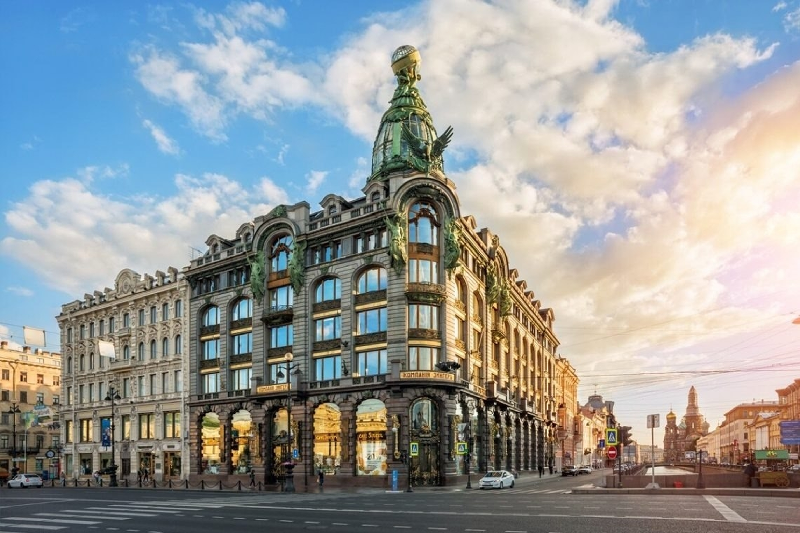
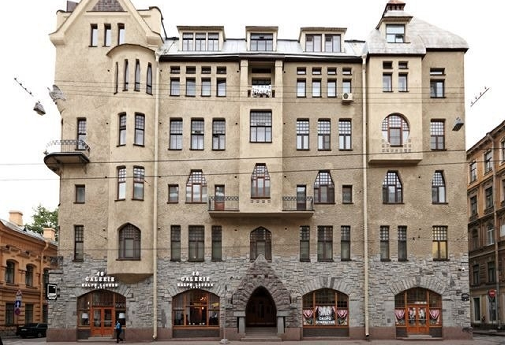
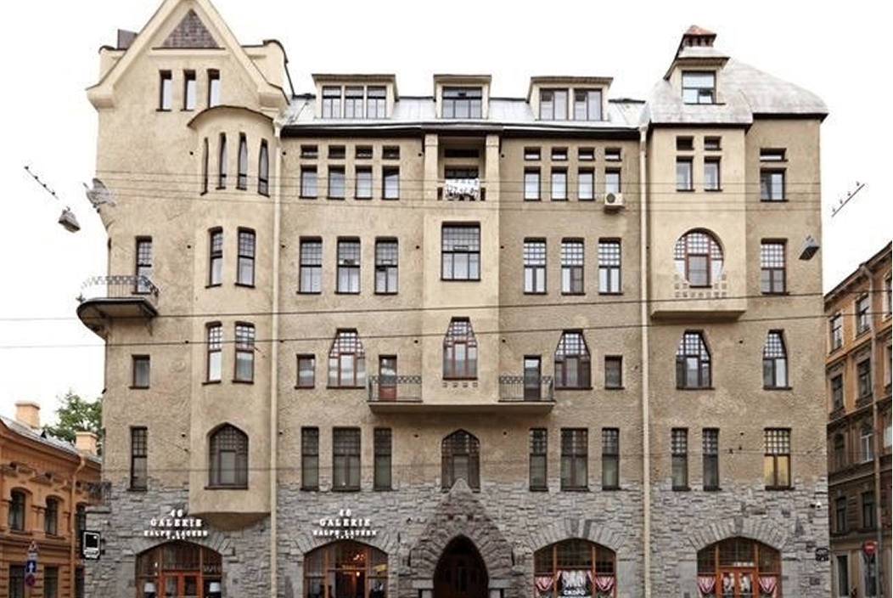
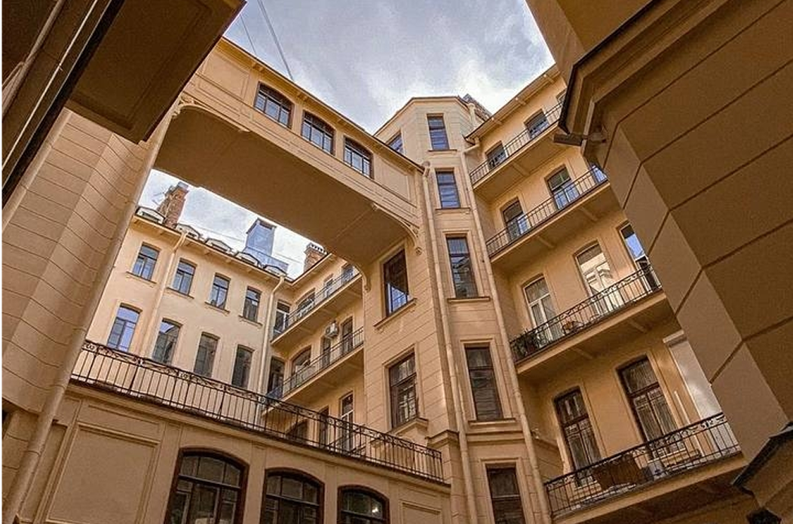

Тайна
Северный модерн
01 // Шифр на фасаде
Дом компании "Зингер"
Тайна в Петербурге — это не тёмная подворотня, это зашифрованное послание на самом парадном проспекте. Северный модерн прячет смыслы в асимметрии окон, в маскаронах, что хмурятся на прохожих. Когда Сюзор возводил башню, нарушающую все каноны Невского, он знал: под стеклянным куполом будет жить слово. Город шепчет: «Присмотрись».
Глобус на башне — символ не только швейной империи, но и идеи, что тайна может быть публичной. Миллионы прохожих проходят мимо, не зная, что фасад хранит сотню деталей, прочитав которые, вы узнаете Петербург иначе. Модерн здесь — архитектура-загадка.

Дом компании "Зингер" // Павел Сюзор // 1702-1704 гг.
02 // Стражи ночного неба
Доходный дом П.И. Лихачёва
Тайна — это когда здание смотрит на вас. Дом Лихачева не кричит о себе, он исподлобья наблюдает.
Совы на фасаде — не просто украшение. Это стражи, которые знают, что происходит в городе, когда опускается тьма. Модерн здесь говорит на языке сумрака, мха и приглушённого света.
Совы, маски, асимметричные эркеры. Лишневский создал фасад, который невозможно прочитать с одного взгляда. Каждый раз вы замечаете новую деталь. Тайна этого дома в том, что он не хочет быть понятым до конца — как и сам Петербург.

Доходный дом П.И. Лихачёва // Александр Лишнёвский // 1911-1912 гг.
03 // Северная сказка
Доходный дом Ю.К. Дюбберта (Дом Бака)
Модерн умеет быть не только мрачным, но и сказочным. Дом Бака — это тайна, спрятанная за коваными решётками и растительными орнаментами. Здесь архитектура напоминает: тайна может быть не пугающей, а завораживающей. В городе гранита и дождей вдруг вырастает фасад, похожий на лесной покров.
Керамические вставки с растениями, изогнутые линии окон. Это здание — шифр, отсылающий к северной природе. Тайна здесь не в мистике, а в умении спрятать тёплое внутри холодного камня.

Доходный дом Ю.К. Дюбберта // Борис Гиршович // 1904-1905 гг.
04 // Перейти в нужное место

Доходный дом П.И. Лихачёва
Доходный дом Ю.К. Дюбберта (Дом Бака)